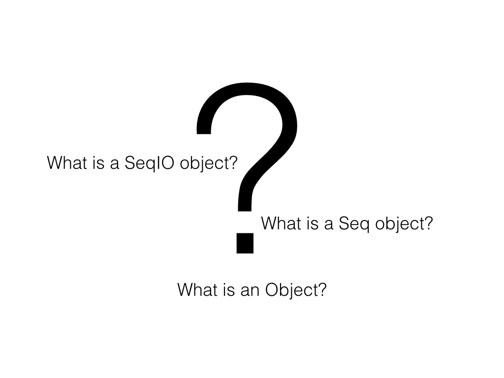
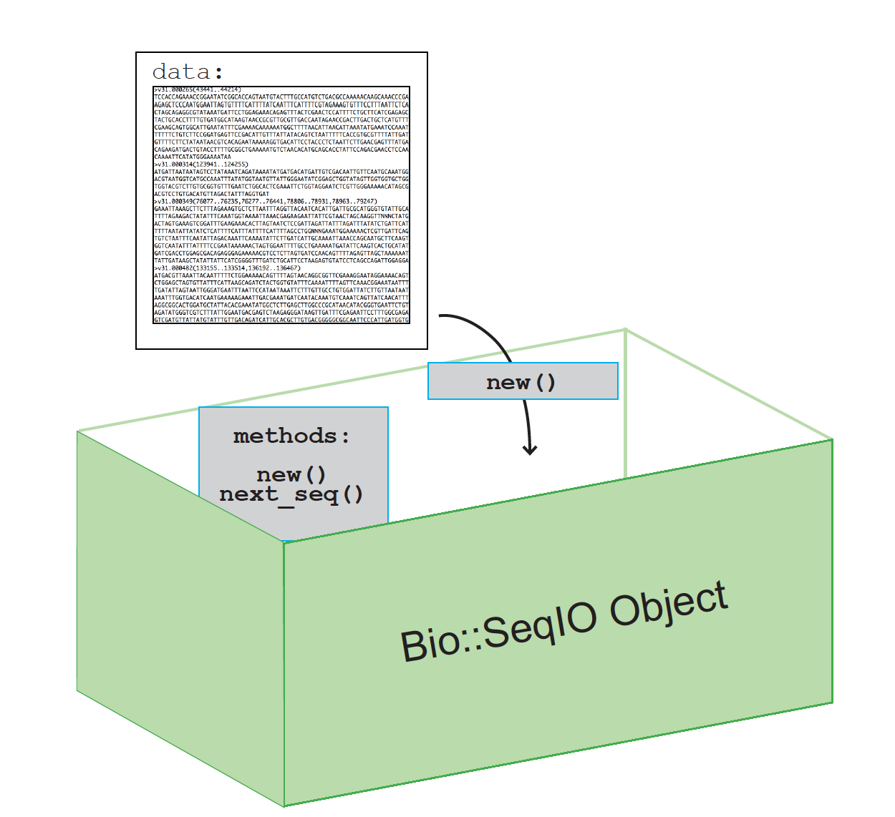
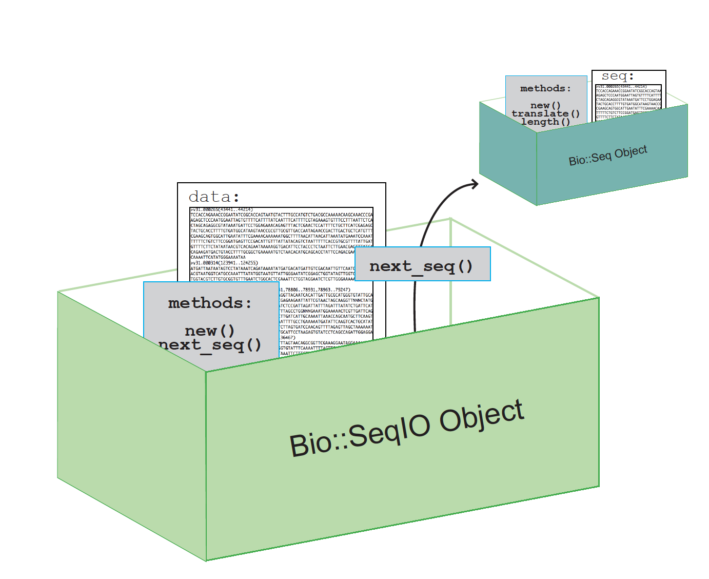
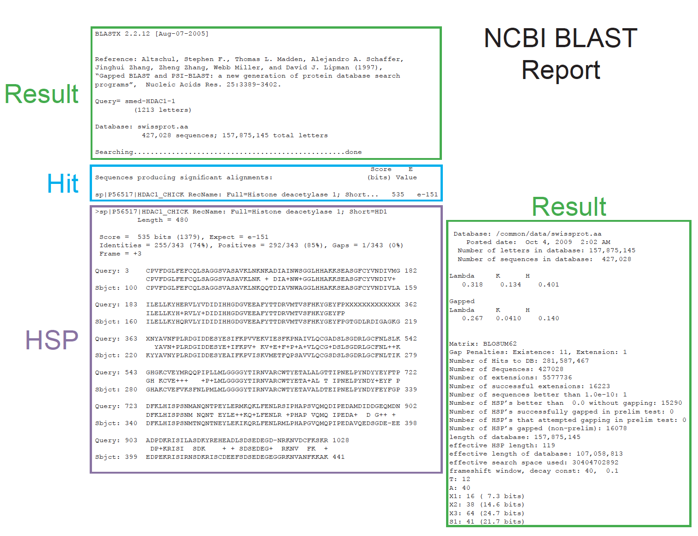
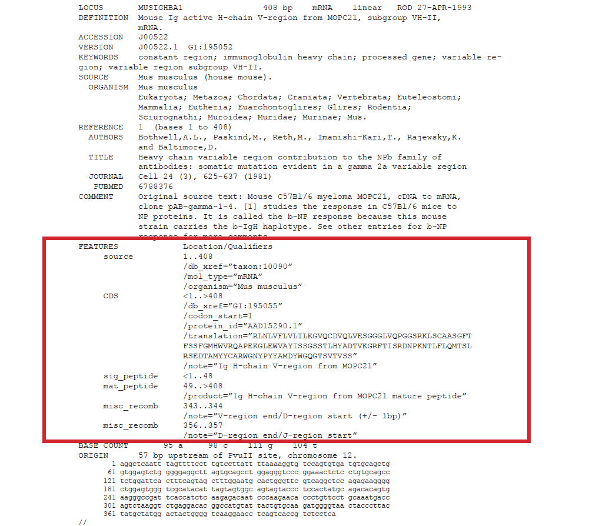

What is BioPerl?
Bioperl is an open source bioinformatics toolkit used by researchers all over the world. If you’re looking for a script built to fit your exact needs you may or may not find it in Bioperl (check the scripts and examples directories). What you will find is an extensive set of Perl modules that will enable you to write your own script, and a community of people who are willing to help you.
Why use BioPerl?
Excerpt from Bio::SeqIO Documentation:
Synopsis
use Bio::SeqIO; $in = Bio::SeqIO->new(-file => "inputfilename" , -format => 'Fasta'); $out = Bio::SeqIO->new(-file => ">outputfilename" , -format => 'EMBL'); while ( my $seq = $in->next_seq() ) { $out->write_seq($seq); } # Now, to actually get at the sequence object, use the standard Bio::Seq # methods (look at Bio::Seq if you don't know what they are) use Bio::SeqIO; $in = Bio::SeqIO->new(-file => "inputfilename" , -format => 'genbank'); while ( my $seq = $in->next_seq() ) { print "Sequence ",$seq->id, " first 10 bases ", $seq->subseq(1,10), "\n"; } # The SeqIO system does have a filehandle binding. Most people find this # a little confusing, but it does mean you can write the world's # smallest reformatter use Bio::SeqIO; $in = Bio::SeqIO->newFh(-file => "inputfilename" , -format => 'Fasta'); $out = Bio::SeqIO->newFh(-format => 'EMBL');Description
Bio::SeqIO is a handler module for the formats in the SeqIO set (eg, Bio::SeqIO::fasta). It is the officially sanctioned way of getting at the format objects, which most people should use.
The Bio::SeqIO system can be thought of like biological file handles. They are attached to filehandles with smart formatting rules (eg, genbank format, or EMBL format, or binary trace file format) and can either read or write sequence objects (Bio::Seq objects, or more correctly, Bio::SeqI implementing objects, of which Bio::Seq is one such object). If you want to know what to do with a Bio::Seq object, read Bio::Seq.
The idea is that you request a stream object for a particular format. All the stream objects have a notion of an internal file that is read from or written to. A particular SeqIO object instance is configured for either input or output. A specific example of a stream object is the Bio::SeqIO::fasta object.
Each stream object has functions ...
APPENDIX
new
Title : new Usage : $stream = Bio::SeqIO->new(-file => 'sequences.fasta', -format => 'fasta'); Function: Returns a new sequence stream Returns : A Bio::SeqIO stream initialised with the appropriate format Args : Named parameters indicating where to read the sequences from or to write them to: -file => filename, OR -fh => filehandle to attach to, OR -string => string Additional arguments, all with reasonable defaults: -format => format of the sequences, usually auto-detected -alphabet => 'dna', 'rna', or 'protein' -flush => 0 or 1 (default: flush filehandles after each write) -seqfactory => sequence factory -locfactory => location factory -objbuilder => object builder
You have a sequence file and you want to do something to each sequence.
BioPerl HOWTOs
- Beginners HOWTO
- Retrieving a sequence from a file
Excerpt from SeqIO HOWTO:
Retrieving a sequence from a file
One beginner mistake is to not use Bio::SeqIO when working with sequence files. This is understandable in some respects. You may have read about Perl’s open() function, and Bioperl’s way of retrieving sequences may look overly complicated, at first. But don’t use open()! Using open() immediately forces you to do the parsing of the sequence file and this can get complicated very quickly. Trust the Bio::SeqIO object, it’s built to open and parse all the common sequence formats, it can read and write to files, and it’s built to operate with all the other Bioperl modules that you will want to use.
Let’s read the file we created previously, sequence.fasta, using Bio::SeqIO. The syntax will look familiar:
#!/bin/perl -w use Bio::SeqIO; $seqio_obj = Bio::SeqIO->new(-file => "sequence.fasta", -format => "fasta" );One difference is immediately apparent: there is no character. Just as with with the open() function this means we’ll be reading from the sequence.fasta file. Let’s add the key line, where we actually retrieve the Sequence object from the file using the next_seq method:
#!/bin/perl -w use Bio::SeqIO; $seqio_obj = Bio::SeqIO->new(-file => "sequence.fasta", -format => "fasta" ); $seq_obj = $seqio_obj->next_seq;
Let's look at this code from the HOWTO.
use Bio::SeqIO This tells perl to look at the methods in the module Bio::SeqIO.Bio::SeqIO->new Creates a new Bio::SeqIO object$seqio_obj = Stores the new object in a variable$seq_obj = $seqio_obj->next_seq; Create a seq object and then store it in a variable.

This box contains:
This includes a method, usually called new, that puts your data into the box. Or in other words, creates an object that knows all about your data and the methods to handle your data.
Specific to SeqIO Object:
new method knows how to handle a file of sequences that is in FASTA format. 
Specific to SeqIO Object:
next_seq method will pull out a single sequence record from data in the SeqIO object.The new object, a Seq object, will be created.
This Seq object is different from a SeqIO Object.
A Seq Object has methods for handling a single sequence record while a SeqIO object has methods for handling a file of sequences.
Let's set up the foundation for dealing with our sequences:
#!/usr/bin/perl -w
use strict;
use Bio::SeqIO;
# get fasta filename from user input
my $file = shift;
# Here a SeqIO obj is created with $file as filename.
# $seqIO_object contains a collection of sequences
# that are from the file named $file
my $seqIO_object = Bio::SeqIO->new(
-file => $file,
-format => 'fasta',
);
# This block is using a while loop and next_seq method to
# “get to” and create a Seq obj for each individual sequence
# in the SeqIO obj of many sequences
while (my $seq_object = $seqIO_object->next_seq){
#do stuff to each sequence in the fasta
}Note: Read the documentation for the methods!!! You are not expected to know how to format the methods and the input and options.
Let's add a bit more to our script:
Code:
#!/usr/bin/perl -w
use strict;
use Bio::SeqIO;
my $file = shift;
## READING
my $seqIO_object = Bio::SeqIO->new(
-file => $file,
-format => 'fasta',
);
#Create a second seqIO object for WRITING using the format 'fasta'.
#Notice, no '-file' option. This will print the FASTA to STDOUT
my $out_seqIO_Obj = Bio::SeqIO->new(-format => 'fasta');
#Loop thru each seq object in $seqIO_object storing information from the object in variables.
while (my $seq_object = $seqIO_object->next_seq){
my $id = $seq_object->id;
my $desc = $seq_object->desc;
my $seqString = $seq_object->seq;
my $revComp = $seq_object->revcom;
my $alphabet = $seq_object-> alphabet;
my $translation_seq_obj = $seq_object-> translate;
my $translation = $translation_seq_obj -> seq;
my $seqLen = $seq_object->length;
print "translation: $translation\n";
print "alphapet: $alphabet\n";
print "seqLen: $seqLen\n";
#prints sequnces in FASTA format to STDOUT
$out_seqIO_Obj->write_seq($seq_object);
}Output:
srobb@www:~/scripts/bioperl$ perl inFasta_doStuff_outFasta.pl /pfbhome/data/HDAC1.nt
translation: LPPGSDAERSRGREGGRTD*R*GREASKMAQTQGTRRKVCYYYDGDVGNYYYGQGHPMKPHRIRMTHNLLLNYGLYRKMEIYRPHKANAEEMTKYHSDDYIKFLRSIRPDNMSEYSKQMQRFNVGEDCPVFDGLFEFCQLSTGGSVASAVKLNKQQTDIAVNWAGGLHHAKKSEASGFCYVNDIVLAILELLKYHQRVLYIDIDIHHGDGVEEAFYTTDRVMTVSFHKYGEYFPGTGDLRDIGAGKGKYYAVNYPLRDGIDDESYEAIFKPVMSKVMEMFQPSAVVLQCGSDSLSGDRLGCFNLTIKGHAKCVEFVKSFNLPMLMLGGGGYTIRNVARCWTYETAVALDTEIPNELPYNDYFEYFGPDFKLHISPSNMTNQNTNEYLEKIKQRLFENLRMLPHAPGVQMQAIPEDAIPEESGDEDEDDPDKRISICSSDKRIACEEEFSDSEEEGEGGRKNSSNFKKAKRVKTEDEKEKDPEEKKEVTEEEKTKEEKPEAKGVKEEVKLA*MDLSSSGFLLSPSRFFPNPSDFIFSISLCIYIKIY*I*ISPGTETKAPSSGQLCWVSSSRSHLATHSSRS*L*TIKGARSG*KGYFYATIRQTPEMPSACLVALERCPY*TF*KGWLGLQGSPVFFRLLK*HQPFLDWFCFRTFPLASSEPRNTACPLSVFS*FCRWRLLV*FPF*DTIFIFVSLFVIKWYISISS*
alphapet: dna
seqLen: 2124
>HDAC1-001 cdna:KNOWN_protein_coding
CTCCCCCCTGGGTCGGACGCTGAGCGGAGCCGCGGGCGGGAGGGCGGACGGACCGACTGA
CGGTAGGGACGGGAGGCGAGCAAGATGGCGCAGACGCAGGGCACCCGGAGGAAAGTCTGT
TACTACTACGACGGGGATGTTGGAAATTACTATTATGGACAAGGCCACCCAATGAAGCCT
CACCGAATCCGCATGACTCATAATTTGCTGCTCAACTATGGTCTCTACCGAAAAATGGAA
ATCTATCGCCCTCACAAAGCCAATGCTGAGGAGATGACCAAGTACCACAGCGATGACTAC
ATTAAATTCTTGCGCTCCATCCGTCCAGATAACATGTCGGAGTACAGCAAGCAGATGCAG
AGATTCAACGTTGGTGAGGACTGTCCAGTATTCGATGGCCTGTTTGAGTTCTGTCAGTTG
TCTACTGGTGGTTCTGTGGCAAGTGCTGTGAAACTTAATAAGCAGCAGACGGACATCGCT
GTGAATTGGGCTGGGGGCCTGCACCATGCAAAGAAGTCCGAGGCATCTGGCTTCTGTTAC
GTCAATGATATCGTCTTGGCCATCCTGGAACTGCTAAAGTATCACCAGAGGGTGCTGTAC
ATTGACATTGATATTCACCATGGTGACGGCGTGGAAGAGGCCTTCTACACCACGGACCGG
GTCATGACTGTGTCCTTTCATAAGTATGGAGAGTACTTCCCAGGAACTGGGGACCTACGG
GATATCGGGGCTGGCAAAGGCAAGTATTATGCTGTTAACTACCCGCTCCGAGACGGGATT
GATGACGAGTCCTATGAGGCCATTTTCAAGCCGGTCATGTCCAAAGTAATGGAGATGTTC
CAGCCTAGTGCGGTGGTCTTACAGTGTGGCTCAGACTCCCTATCTGGGGATCGGTTAGGT
TGCTTCAATCTAACTATCAAAGGACACGCCAAGTGTGTGGAATTTGTCAAGAGCTTTAAC
CTGCCTATGCTGATGCTGGGAGGCGGTGGTTACACCATTCGTAACGTTGCCCGGTGCTGG
ACATATGAGACAGCTGTGGCCCTGGATACGGAGATCCCTAATGAGCTTCCATACAATGAC
TACTTTGAATACTTTGGACCAGATTTCAAGCTCCACATCAGTCCTTCCAATATGACTAAC
CAGAACACGAATGAGTACCTGGAGAAGATCAAACAGCGACTGTTTGAGAACCTTAGAATG
CTGCCGCACGCACCTGGGGTCCAAATGCAGGCGATTCCTGAGGACGCCATCCCTGAGGAG
AGTGGCGATGAGGACGAAGACGACCCTGACAAGCGCATCTCGATCTGCTCCTCTGACAAA
CGAATTGCCTGTGAGGAAGAGTTCTCCGATTCTGAAGAGGAGGGAGAGGGGGGCCGCAAG
AACTCTTCCAACTTCAAAAAAGCCAAGAGAGTCAAAACAGAGGATGAAAAAGAGAAAGAC
CCAGAGGAGAAGAAAGAAGTCACCGAAGAGGAGAAAACCAAGGAGGAGAAGCCAGAAGCC
AAAGGGGTCAAGGAGGAGGTCAAGTTGGCCTGAATGGACCTCTCCAGCTCTGGCTTCCTG
CTGAGTCCCTCACGTTTCTTCCCCAACCCCTCAGATTTTATATTTTCTATTTCTCTGTGT
ATTTATATAAAAATTTATTAAATATAAATATCCCCAGGGACAGAAACCAAGGCCCCGAGC
TCAGGGCAGCTGTGCTGGGTGAGCTCTTCCAGGAGCCACCTTGCCACCCATTCTTCCCGT
TCTTAACTTTGAACCATAAAGGGTGCCAGGTCTGGGTGAAAGGGATACTTTTATGCAACC
ATAAGACAAACTCCTGAAATGCCAAGTGCCTGCTTAGTAGCTTTGGAAAGGTGCCCTTAT
TGAACATTCTAGAAGGGGTGGCTGGGTCTTCAAGGATCTCCTGTTTTTTTCAGGCTCCTA
AAGTAACATCAGCCATTTTTAGATTGGTTCTGTTTTCGTACCTTCCCACTGGCCTCAAGT
GAGCCAAGAAACACTGCCTGCCCTCTGTCTGTCTTCTCCTAATTCTGCAGGTGGAGGTTG
CTAGTCTAGTTTCCTTTTTGAGATACTATTTTCATTTTTGTGAGCCTCTTTGTAATAAAA
TGGTACATTTCTATATCCTCCTGAThe table below shows the methods you’re likely to use with the Sequence object directly. Bear in mind that not all values, such as molecule or division, are found in all sequence formats, you have to know something about your input sequences in order to get some of these values.
| Name | Returns | Example | Note |
|---|---|---|---|
| accession_number | identifier | $acc = $so->accession_number | get or set an identifier |
| alphabet | alphabet | $so->alphabet(‘dna’) | get or set the alphabet (‘dna’,’rna’,’protein’) |
| authority | authority, if available | $so->authority(“DB”) | get or set the organization |
| desc | description | $so->desc(“Example 1”) | get or set a description |
| display_id | identifier | $so->display_id(“M123456”) | get or set an identifier |
| division | division, if available (e.g. PRI) | $div = $so->division | get division (e.g. “PRI”) |
| get_dates | array of dates, if available | @dates = $so->get_dates | get dates |
| get_secondary_accessions | array of secondary accessions, if available | @accs = $so->get_secondary_accessions | get other identifiers |
| is_circular | Boolean | if $so->is_circular{} | get or set |
| keywords | keywords, if available | @array = $so->keywords | get or set keywords |
| length | length, a number | $len = $so->length | get the length |
| molecule | molecule type, if available | $type = $so->molecule | get molecule (e.g. “RNA”, “DNA”) |
| namespace | namespace, if available | $so->namespace(“Private”) | get or set the name space |
| new | Sequence object | $so = Bio::Seq->new(-seq => “MPQRAS”) | create a new one, see for more |
| pid | pid, if available | $pid = $so->pid | get pid |
| primary_id | identifier | $so->primary_id(12345) | get or set an identifier |
| revcom | Sequence object | $so2 = $so1->revcom | Reverse complement |
| seq | sequence string | $seq = $so->seq | get or set the sequence |
| seq_version | version, if available | $so->seq_version(“1”) | get or set a version |
| species | Species object | $species_obj = $so->species | See for more |
| subseq | sequence string | $string = $seq_obj->subseq(10,40) | Arguments are start and end |
| translate | protein Sequence object | $prot_obj = $dna_obj->translate | |
| trunc | Sequence object | $so2 = $so1->trunc(10,40) | Arguments are start and end |
Looking through BioPerl HOWTOs we find that we can use Bio::DB::Fasta.
Local Databases HOWTO
Bio::DB::Fasta CPAN DOC
From Local Databases HOWTO:
Abstract
This is a HOWTO that talks about using Bioperl to create local sequence databases for fast retrieval.
Code from HOWTO:
use strict;
use Bio::DB::Fasta;
my $id = 'CHROMOSOME_I';
my $file = "arabidopsis.fa"
my $db = Bio::DB::Fasta->new($file);
my $seqobj = $db->get_Seq_by_id($id); Let's write our own to retrieve sequences from a local copy of SwissProt/Uniprot:
#!/usr/bin/perl
use warnings;
use strict;
use Bio::DB::Fasta;
# downloaded from http://www.uniprot.org/downloads
my $dbfile = '/pfbhome/data/uniprot_sprot.fasta';
my $db_obj = Bio::DB::Fasta->new($dbfile);
# retrieve a sequence
my $id = 'sp|Q13547|HDAC1_HUMAN';
my $seq_obj = $db_obj->get_Seq_by_id($id);
if ( defined $seq_obj ) {
print "seq:" , $seq_obj->seq , "\n";
} else {
warn("Cannot find $id\n");
}Output:
srobb@www:~/scripts/bioperl$ perl ./local_seq_query.pl
seq:MAQTQGTRRKVCYYYDGDVGNYYYGQGHPMKPHRIRMTHNLLLNYGLYRKMEIYRPHKANAEEMTKYHSDDYIKFLRSIRPDNMSEYSKQMQRFNVGEDCPVFDGLFEFCQLSTGGSVASAVKLNKQQTDIAVNWAGGLHHAKKSEASGFCYVNDIVLAILELLKYHQRVLYIDIDIHHGDGVEEAFYTTDRVMTVSFHKYGEYFPGTGDLRDIGAGKGKYYAVNYPLRDGIDDESYEAIFKPVMSKVMEMFQPSAVVLQCGSDSLSGDRLGCFNLTIKGHAKCVEFVKSFNLPMLMLGGGGYTIRNVARCWTYETAVALDTEIPNELPYNDYFEYFGPDFKLHISPSNMTNQNTNEYLEKIKQRLFENLRMLPHAPGVQMQAIPEDAIPEESGDEDEDDPDKRISICSSDKRIACEEEFSDSEEEGEGGRKNSSNFKKAKRVKTEDEKEKDPEEKKEVTEEEKTKEEKPEAKGVKEEVKLAYou have a sequence and want to create a Seq object on the fly.
Bio::Seq
Beginners HOWTO: Creating a sequence, and an Object
Bio::Seq CPAN DOC
From Beginners HOWTO with a Data::Dumper print method added to visualize the object in a different way.
Code:
#!/usr/bin/perl
use strict;
use warnings;
use Bio::Seq;
use Data::Dumper;
my $seq_obj = Bio::Seq->new(-seq => 'aaaatgggggggggggccccgtt',
-alphabet => 'dna' );
print Dumper $seq_obj;The Object is just a hash of hashes, with some Blessing involved.
Output:
srobb@www:~/scripts/bioperl$ perl seqObj.pl
$VAR1 = bless( {
'_root_verbose' => 0,
'primary_seq' => bless( {
'length' => 23,
'_root_verbose' => 0,
'alphabet' => 'dna',
'seq' => 'aaaatgggggggggggccccgtt',
'_nowarnonempty' => undef
}, 'Bio::PrimarySeq' )
}, 'Bio::Seq' );
Let's add a bit more so that we can see what we can do with our new seq obj:
Code:
#!/usr/bin/perl -w
use strict;
use Bio::Seq;
use Bio::SeqIO;
my $seqObj = Bio::Seq->new(-seq => 'aaaatgggggggggggccccgtt',
-alphabet => 'dna',
-display_id => 'seq_example',
-description=> 'this seq is awesome');
## Create a seqIO Object to write out a sequence in FASTA format to a file
my $out_seqIO_Obj = Bio::SeqIO->new(
-format => 'fasta',
-file => '>out.fasta',
);
## Write the seq object
$out_seqIO_Obj->write_seq($seqObj);
## Retrieve and print out some extra information about our seq object
print "Id: " , $seqObj->display_id , "\n";
print "Length: " , $seqObj->length , "\n";
print "Seq: " , $seqObj->seq , "\n";
print "Subseq (3..6): " , $seqObj->subseq(3,6) , "\n";
print "Translation: " , $seqObj->translate->seq , "\n";Note: the nesting of methods. translate() returns a seq object that is passed to the seq() method that will return a string that can be printed.
Output:
srobb@www:~/scripts/bioperl$ perl create_seqObj.pl
Id: seq_example
Length: 23
Seq: aaaatgggggggggggccccgtt
Subseq (3..6): aatg
Translation: KMGGGAP
srobb@www:~/scripts/bioperl$ cat out.fasta
>seq_example this seq is awesome
aaaatgggggggggggccccgttYou have GenBank files and want to extract only the sequence in FASTA format.
Bio::SeqIO
SeqIO HOWTO
Bio::SeqIO CPAN DOC
Let's look at our genbank formated file:
srobb@www:~/scripts/bioperl$ cat /pfbhome/data/MUSIGHBA1.gb
LOCUS MUSIGHBA1 408 bp mRNA linear ROD 27-APR-1993
DEFINITION Mouse Ig active H-chain V-region from MOPC21, subgroup VH-II, mRNA.
ACCESSION J00522
VERSION J00522.1 GI:195052
KEYWORDS constant region; immunoglobulin heavy chain; processed gene;
variable region; variable region subgroup VH-II.
SOURCE Mus musculus (house mouse)
ORGANISM Mus musculus
Eukaryota; Metazoa; Chordata; Craniata; Vertebrata; Euteleostomi;
Mammalia; Eutheria; Euarchontoglires; Glires; Rodentia;
Sciurognathi; Muroidea; Muridae; Murinae; Mus; Mus.
REFERENCE 1 (bases 1 to 408)
AUTHORS Bothwell,A.L., Paskind,M., Reth,M., Imanishi-Kari,T., Rajewsky,K.
and Baltimore,D.
TITLE Heavy chain variable region contribution to the NPb family of
antibodies: somatic mutation evident in a gamma 2a variable region
JOURNAL Cell 24 (3), 625-637 (1981)
PUBMED 6788376
COMMENT Original source text: Mouse C57Bl/6 myeloma MOPC21, cDNA to mRNA,
clone pAB-gamma-1-4.
[1] studies the response in C57Bl/6 mice to NP proteins. It is
called the b-NP response because this mouse strain carries the
b-IgH haplotype. See other entries for b-NP response for more
comments.
FEATURES Location/Qualifiers
source 1..408
/organism="Mus musculus"
/mol_type="mRNA"
/db_xref="taxon:10090"
CDS <1..>408
/note="Ig H-chain V-region from MOPC21"
/codon_start=1
/protein_id="AAD15290.1"
/db_xref="GI:195055"
/translation="RLNLVFLVLILKGVQCDVQLVESGGGLVQPGGSRKLSCAASGFT
FSSFGMHWVRQAPEKGLEWVAYISSGSSTLHYADTVKGRFTISRDNPKNTLFLQMTSL
RSEDTAMYYCARWGNYPYYAMDYWGQGTSVTVSS"
sig_peptide <1..48
mat_peptide 49..>408
/product="Ig H-chain V-region from MOPC21 mature peptide"
misc_recomb 343..344
/note="V-region end/D-region start (+/- 1bp)"
misc_recomb 356..357
/note="D-region end/J-region start"
ORIGIN 57 bp upstream of PvuII site, chromosome 12.
1 aggctcaatt tagttttcct tgtccttatt ttaaaaggtg tccagtgtga tgtgcagctg
61 gtggagtctg ggggaggctt agtgcagcct ggagggtccc ggaaactctc ctgtgcagcc
121 tctggattca ctttcagtag ctttggaatg cactgggttc gtcaggctcc agagaagggg
181 ctggagtggg tcgcatacat tagtagtggc agtagtaccc tccactatgc agacacagtg
241 aagggccgat tcaccatctc aagagacaat cccaagaaca ccctgttcct gcaaatgacc
301 agtctaaggt ctgaggacac ggccatgtat tactgtgcaa gatggggtaa ctacccttac
361 tatgctatgg actactgggg tcaaggaacc tcagtcaccg tctcctca
//| Name | Description | File extension | ||
|---|---|---|---|---|
| abi | ABI tracefile | ab[i1] | ||
| ace | Ace database | ace | ||
| agave | AGAVE XML | |||
| alf | ALF tracefile | alf | ||
| asciitree | write-only, to visualize features | |||
| bsml | BSML using | bsm,bsml | ||
| bsml_sax | BSML, using | |||
| chadoxml | CHADO sequence format | |||
| chaos | CHAOS sequence format | |||
| chaosxml | Chaos XML | |||
| ctf | CTF tracefile | ctf | ||
| embl | EMBL database | embl,ebl,emb,dat | ||
| entrezgene | Entrez Gene ASN1 | |||
| excel | Excel | |||
| exp | Staden EXP format | exp | ||
| fasta | FASTA | fasta,fast,seq,fa,fsa,nt,aa | ||
| fastq | quality score data in FASTA-like format | fastq | ||
| flybase_chadoxml | variant of Chado XML | |||
| game | GAME XML | |||
| gcg | GCG | gcg | ||
| genbank | GenBank | gb | gbank | genbank |
| interpro | InterProScan XML | |||
| kegg | KEGG | |||
| largefasta | Large files, fasta format | |||
| lasergene | Lasergene format | |||
| locuslink | LocusLink | |||
| metafasta | ||||
| phd | Phred | phd,phred | ||
| pir | PIR database | pir | ||
| pln | PLN tracefile | pln | ||
| qual | Phred | |||
| raw | plain text | txt | ||
| scf | Standard Chromatogram Format | scf | ||
| seqxml | SeqXML sequence format | xml | ||
| strider | DNA Strider format | |||
| swiss | SwissProt | swiss,sp | ||
| tab | tab-delimited | |||
| table | Table | |||
| tigr | TIGR XML | |||
| tigrxml | TIGR Coordset XML | |||
| tinyseq | NCBI TinySeq XML | |||
| ztr | ZTR tracefile | ztr |
Here we read in a FASTA file and we printed it out again in FASTA format.
Code:
#!/usr/bin/perl -w
use strict;
use Bio::SeqIO;
my $file = shift;
my $seqIO_object = Bio::SeqIO->new(
-file => $file,
-format => 'fasta',
);
my $out_seqIO_Obj = Bio::SeqIO->new(-format => 'fasta');
while (my $seq_object = $seqIO_object->next_seq){
$out_seqIO_Obj->write_seq($seq_object);
}Do you see where we create the $seqIO_Obj?
We have 'fasta' as the format.
What happens if we change to 'genbank'?
#!/usr/bin/perl -w
use strict;
use Bio::SeqIO;
my $file = shift;
my $seqIO_object = Bio::SeqIO->new(
-file => $file,
-format => 'genbank',
);
my $out_seqIO_Obj = Bio::SeqIO->new(-format => 'fasta');
while (my $seq_object = $seqIO_object->next_seq){
$out_seqIO_Obj->write_seq($seq_object);
}Let's run our script:
Output:
srobb@www:~/scripts/bioperl$ perl convert_genbank_fasta.pl /pfbhome/data/MUSIGHBA1.gb
>MUSIGHBA1 Mouse Ig active H-chain V-region from MOPC21, subgroup VH-II, mRNA.
AGGCTCAATTTAGTTTTCCTTGTCCTTATTTTAAAAGGTGTCCAGTGTGATGTGCAGCTG
GTGGAGTCTGGGGGAGGCTTAGTGCAGCCTGGAGGGTCCCGGAAACTCTCCTGTGCAGCC
TCTGGATTCACTTTCAGTAGCTTTGGAATGCACTGGGTTCGTCAGGCTCCAGAGAAGGGG
CTGGAGTGGGTCGCATACATTAGTAGTGGCAGTAGTACCCTCCACTATGCAGACACAGTG
AAGGGCCGATTCACCATCTCAAGAGACAATCCCAAGAACACCCTGTTCCTGCAAATGACC
AGTCTAAGGTCTGAGGACACGGCCATGTATTACTGTGCAAGATGGGGTAACTACCCTTAC
TATGCTATGGACTACTGGGGTCAAGGAACCTCAGTCACCGTCTCCTCAWhat would we change?
Code:
#!/usr/bin/perl
use warnings;
use strict;
use Bio::SeqIO;
my $file = shift;
my $seqIO_object = Bio::SeqIO->new(
-file => $file,
-format => 'fasta',
);
my $out_seqIO_Obj = Bio::SeqIO->new(-format => 'genbank');
while (my $seq_object = $seqIO_object->next_seq){
$out_seqIO_Obj->write_seq($seq_object);
}Here we changed:
$seqIO_object format to FASTA$out_seqIO_Obj format to GenBankLet's look at our FASTA file:
srobb@www:~/scripts/bioperl$ cat /pfbhome/data/H4.nt
>gi|603555|emb|X83548.1| H.sapiens gene for histone H4
TCTAGAGATGGCGCCATTTGATTCCAGCAGCCACAAAGCACTAGAACAATCGATGCTAAGAGGTGACAGG
AAAAACAGGCTGCAAAGACCCAGACAATGGAATGCAGCGGTGGTCAGCCTAAAACACTGTAGAAGGGCAA
GATGAGCTGAGTAATTTTTAACTGGGCATCATTTTTAGAAACTGGAGTTTAAGTACCCCCTTTTCCATTT
TTTCCTGAAGTCGTGGGCAGGGCGCAAGGTCTGTGAATCGGCCGACCGGATGCAGCTGGTGTGGAGAGTT
CCCAATCAGGTCCGATTTATTACTATATAAAGTACTGCTGCGAGGCTTGCCGTGTTGCATTTTGTTTAGT
ACAAGACATGTCTGGGCGCGGCAAAGGCGGGAAGGGTCTGGGCAAAGGAGGCGCTAAGCGCCACCGCAAA
GTTCTGCGCGACAACATTCAGGGCATCACCAAGCCCGCCATCCGACGCCTGGCACGGCGTGGAGGCGTTA
AGCGCATCTCAGGCCTTATATACGAGGAGACACGCGGAGTTCTTAAAGTGTTTTTGGAGAATGTAATCCG
CGATGCAGTTACCTACACGGAGCACGCCAAACGCAAGACAGTCACAGCCATGGACGTGGTTTACGCGCTC
AAGCGCCAGGGCCGCACCCTGTATGGCTTTGGCGGCTGAGTGTTTTACTTACTTACACGGTTCCTCAAAG
GCCCTTCTCAGGGCCACCCATGAAGTCTGTGAAAGAGCTGTAGACTAAAGATAGTTAATTTCTTAAGAAC
ACTTAAACGTATGGCAGTTTTGGCAAATTAGCGATTCCACATAAGCAGTCGCTGAAGTTTGAGGTTCGGT
GCCCCTTTCAGCATTACTTAGTGGTTAAAALet's run our script:
Output:
srobb@www:~/scripts/bioperl$ perl convert_fasta_genbank.pl /pfbhome/data/H4.nt
LOCUS gi|603555|emb|X83548.1| 870 bp dna linear UNK
DEFINITION H.sapiens gene for histone H4
ACCESSION unknown
FEATURES Location/Qualifiers
ORIGIN
1 tctagagatg gcgccatttg attccagcag ccacaaagca ctagaacaat cgatgctaag
61 aggtgacagg aaaaacaggc tgcaaagacc cagacaatgg aatgcagcgg tggtcagcct
121 aaaacactgt agaagggcaa gatgagctga gtaattttta actgggcatc atttttagaa
181 actggagttt aagtaccccc ttttccattt tttcctgaag tcgtgggcag ggcgcaaggt
241 ctgtgaatcg gccgaccgga tgcagctggt gtggagagtt cccaatcagg tccgatttat
301 tactatataa agtactgctg cgaggcttgc cgtgttgcat tttgtttagt acaagacatg
361 tctgggcgcg gcaaaggcgg gaagggtctg ggcaaaggag gcgctaagcg ccaccgcaaa
421 gttctgcgcg acaacattca gggcatcacc aagcccgcca tccgacgcct ggcacggcgt
481 ggaggcgtta agcgcatctc aggccttata tacgaggaga cacgcggagt tcttaaagtg
541 tttttggaga atgtaatccg cgatgcagtt acctacacgg agcacgccaa acgcaagaca
601 gtcacagcca tggacgtggt ttacgcgctc aagcgccagg gccgcaccct gtatggcttt
661 ggcggctgag tgttttactt acttacacgg ttcctcaaag gcccttctca gggccaccca
721 tgaagtctgt gaaagagctg tagactaaag atagttaatt tcttaagaac acttaaacgt
781 atggcagttt tggcaaatta gcgattccac ataagcagtc gctgaagttt gaggttcggt
841 gcccctttca gcattactta gtggttaaaa
//You have 10s of thousands of BLAST reports, or maybe just 1, and you want to find all hits better than a specific E-value.
Bio::SearchIO
SearchIO HOWTO
Bio::Seq CPAN DOC
Code From Cpan:
use Bio::SearchIO;
# format can be 'fasta', 'blast', 'exonerate', ...
my $searchio = Bio::SearchIO->new( -format => 'blastxml',
-file => 'blastout.xml' );
while ( my $result = $searchio->next_result() ) {
while( my $hit = $result->next_hit ) {
# process the Bio::Search::Hit::HitI object
while( my $hsp = $hit->next_hsp ) {
# process the Bio::Search::HSP::HSPI object
}
}
}
Note: Command used to generate BLAST output
blastx -db /pfbhome/data/uniprot_sprot.fasta -query /pfbhome/data/smed-HDAC.nt -evalue 1e-50 -num_descriptions 1 -num_alignments 1 > smed-HDAC1-1_BLASTX_uniprot.blastoutLet's start parsing our BLAST output.
Code:
#!/usr/bin/perl
use warnings;
use strict;
use Bio::SearchIO;
#file: blast_parser_intro.pl
my $blast_report = shift;
# Create the SearchIO Object
my $searchIO_obj = Bio::SearchIO->new(
-file => $blast_report,
-format => 'blast'
);
while (my $result_obj = $searchIO_obj ->next_result ) {
my $program = $result_obj ->algorithm;
my $queryName = $result_obj ->query_name;
my $queryDesc = $result_obj ->query_description;
my $queryLen = $result_obj ->query_length;
print "program=$program\n";
print "queryName=$queryName\n";
print "queryDesc=$queryDesc\n";
print "queryLen=$queryLen\n";
}Output:
srobb@www:~/scripts/bioperl$ perl parseBlast_result.pl smed-HDAC1-1_BLASTX_uniprot.blastout
program=BLASTX
queryName=smed-HDAC1-1
queryDesc=Schmidtea mediterranea HDAC1
queryLen=1487new() method creates a new Search IO object that contains you BLAST output and knows about all the methods to deal with your BLAST report, such as how to find the file, open the file, and how to read from it.
next_result() method within a while loop will iterate through your BLAST report one result at a time and create and return a result object for each result.
The result object contains all the information about a BLAST result and the methods for accessing information about the query, such as, the BLAST algorithm used, database name, and methods to retrieve a HIT object.
| Object | Method | Example | Description | |||
|---|---|---|---|---|---|---|
| Result | algorithm | BLASTX | algorithm string | |||
| Result | algorithm_version | 2.2.4 [Aug-26-2002] | algorithm version | |||
| Result | query_name | gi | 20521485 | dbj | AP004641.2 | query name |
| Result | query_accession | AP004641.2 | query accession | |||
| Result | query_length | 3059 | query length | |||
| Result | query_description | Oryza sativa … 977CE9AF checksum. | query description | |||
| Result | database_name | test.fa | database name | |||
| Result | database_letters | 1291 | number of residues in database | |||
| Result | database_entries | 5 | number of database entries | |||
| Result | available_statistics | effectivespaceused … dbletters | statistics used | |||
| Result | available_parameters | gapext matrix allowgaps gapopen | parameters used | |||
| Result | num_hits | 1 | number of hits | |||
| Result | hits | List of all Bio::Search::Hit::GenericHit objects for this Result | ||||
| Result | rewind | Reset the internal iterator that dictates where next_hit() is pointing, useful for re-iterating through the list of hits |
Table 2.1: The data returned by the Result object methods when the report shown above is used as input.
Let's get information about the Hits in our BLAST output:
Code:
#!/usr/bin/perl
use warnings;
use strict;
use Bio::SearchIO;
my $blast_report = shift;
my $searchIO_obj = Bio::SearchIO->new(
-file => $blast_report,
-format => 'blast'
);
while (my $result_obj = $searchIO_obj->next_result ) {
while (my $hit_obj = $result_obj->next_hit){
my $hitName = $hit_obj->name;
my $hitAcc = $hit_obj->accession;
my $hitLen = $hit_obj->length;
my $hitSig = $hit_obj->significance;
my $hitScore = $hit_obj->raw_score;
print "hitName=$hitName\n";
print "hitAcc=$hitAcc\n";
print "hitLen=$hitLen\n";
print "hitSig=$hitSig\n";
print "hitScore=$hitScore\n";
}
}Output:
srobb@www:~/scripts/bioperl$ perl parseBlast_hit.pl smed-HDAC1-1_BLASTX_uniprot.blastout
hitName=sp|P56517|HDAC1_CHICK
hitAcc=P56517
hitLen=480
hitSig=0.0
hitScore=1680| Object | Method | Example | Description | ||
|---|---|---|---|---|---|
| Hit | name | gb | 443893 | 124775 | hit name |
| Hit | length | 331 | Length of the Hit sequence | ||
| Hit | accession | 443893 | accession (usually when this is a Genbank formatted id this will be an accession number - the part after the gb or emb ) |
||
| Hit | description | LaForas sequence | hit description | ||
| Hit | algorithm | BLASTX | algorithm | ||
| Hit | raw_score | 92 | hit raw score | ||
| Hit | significance | 2e-022 | hit significance | ||
| Hit | bits | 92.0 | hit bits | ||
| Hit | hsps | List of all Bio::Search::HSP::GenericHSP objects for this Hit | |||
| Hit | num_hsps | 1 | number of HSPs in hit | ||
| Hit | locus | 124775 | locus name | ||
| Hit | accession_number | 443893 | accession number | ||
| Hit | rewind | Resets the internal counter for next_hsp() so that the iterator will begin at the beginning of the list |
Table 2.2. The data returned by Hit object methods when the report shown above is used as input.
Let's get information about the HSPs of our HIT in our Result in our BLAST Report:
Code:
#!/usr/bin/perl
use strict;
use warnings;
use Bio::SearchIO;
my $blast_report = shift;
my $searchIO_obj = Bio::SearchIO->new(
-file => $blast_report,
-format => 'blast'
);
while (my $result_obj = $searchIO_obj->next_result ) {
while (my $hit_obj = $result_obj->next_hit){
while (my $hsp_obj = $hit_obj ->next_hsp){
my $evalue = $hsp_obj->evalue;
my $hitString = $hsp_obj->hit_string;
my $queryString = $hsp_obj->query_string;
my $homologyString = $hsp_obj->homology_string;
print "hsp evalue: $evalue\n";
print "HIT : ",substr($hitString,0,50),"\n";
print "HOMOLOGY : ",substr($homologyString,0,50),"\n";
print "QUERY : ",substr($queryString,0,50),"\n";
}
}
}Output:
srobb@www:~/scripts/bioperl$ perl parseBlast_hsp.pl smed-HDAC1-1_BLASTX_uniprot.blastout
hsp evalue: 0.0
HIT : TKRKVCYYYDGDVGNYYYGQGHPMKPHRIRMTHNLLLNYGLYRKMEIYRP
HOMOLOGY : ++KVCYYYDGD+GNYYYGQGHPMKPHRIRMTHNLLLNYGLYRKME+Y+P
QUERY : VRKKVCyyydgdignyyygqgHPMKPHRIRMTHNLLLNYGLYRKMEVYKP| Object | Method | Example | Description |
|---|---|---|---|
| HSP | algorithm | BLASTX | algorithm |
| HSP | evalue | 2e-022 | e-value |
| HSP | expect | 2e-022 | alias for evalue() |
| HSP | frac_identical | 0.884615384615385 | fraction identical |
| HSP | frac_conserved | 0.923076923076923 | fraction conserved (conservative and identical replacements aka “fraction similar”) |
| HSP | gaps | 2 | number of gaps |
| HSP | query_string | DMGRCSSG .. | query string from alignment |
| HSP | hit_string | DIVQNSS … | hit string from alignment |
| HSP | homology_string | D+ + SSGCN … | string from alignment |
| HSP | length(‘total’) | 52 | length of HSP (including gaps) |
| HSP | length(‘hit’) | 50 | length of hit participating in alignment minus gaps |
| HSP | length(‘query’)t | 156 | length of query participating in alignment minus gaps |
| HSP | hsp_length | 52 | Length of the HSP (including gaps) alias for length(‘total’) |
| HSPt | frame | 0 | $hsp->query->frame,$hsp->hit->frame |
| HSP | num_conserved | 48 | number of conserved (conservative replacements, aka “similar”) residues |
| HSP | num_identical | 46 | number of identical residues |
| HSP | rank | 1 | rank of HSP |
| HSP | seq_inds(‘query’,’identical’) | (966,971,972,973,974,975 …) | identical positions as array |
| HSP | seq_inds(‘query’,’conserved-not-identical’) | (967,969) | conserved, but not identical positions as array |
| HSP | seq_inds(‘query’,’conserved’) | (966,967,969,971,973,974,975, …) | conserved or identical positions as array |
| HSP | seq_inds(‘hit’,’identical’) | (197,202,203,204,205, …) | identical positions as array |
| HSP | seq_inds(‘hit’,’conserved-not-identical’) | (198,200) | conserved not identical positions as array |
| HSP | seq_inds(‘hit’,’conserved’,1) | (197,202-246) | conserved or identical positions as array, with runs of consecutive numbers compressed |
| HSP | score | 227 | score |
| HSP | bits | 92.0 | score in bits |
| HSP | range(‘query’) | (2896,3051) | start and end as array |
| HSP | range(‘hit’) | (197,246) | start and end as array |
| HSP | percent_identity | 88.4615384615385 | % identical |
| HSP | strand(‘hit’) | 1 | strand of the hit |
| HSP | strand(‘query’) | 1 | strand of the query |
| HSP | start(‘query’) | 2896 | start position from alignment |
| HSP | end(‘query’) | 3051 | end position from alignment |
| HSP | start(‘hit’) | 197 | start position from alignment |
| HSP | end(‘hit’) | 246 | end position from alignment |
| HSP | matches(‘hit’) | (46,48) | number of identical and conserved as array |
| HSP | matches(‘query’) | (46,48) | number of identical and conserved as array |
| HSP | get_aln | sequence alignment | Bio::SimpleAlign object |
| HSP | hsp_group | Not available in this report | Group field from WU-BLAST reports run with -topcomboN or -topcomboE specified |
| HSP | links | Not available in this report | Links field from WU-BLAST reports run with -links showing consistent HSP linking |
Table 2.3. The data returned by HSP object methods when the report shown above is used as input.
You need to convert many alignment files from one format to another or modify an alignment.
For parsing and writing multiple alignment file formats including:
BioPerl AlignIO and SimpleAlign HOWTO
CPAN AlignIO Doc
CPAN SimpleAlign Doc
Convert between alignment formats i.e., FASTA to NEXUS.
Code:
#!/usr/bin/perl -w
use strict;
use Bio::AlignIO;
my $align_fasta = shift;
my $in_alignIO_obj = Bio::AlignIO->new(
-format => 'fasta',
-file => $align_fasta
);
my $out_alignIO_obj = Bio::AlignIO->new(
-format => 'nexus',
-file => ">$align_fasta.nex"
);
while( my $align_obj = $in_alignIO_obj->next_aln ){
$out_alignIO_obj->write_aln($align_obj);
}Do you notice how similar this looks to the SeqIO script? We have two new() methods creating new objects, one for reading one for writing for which we can defined the format. How about the the next_aln() and write_aln() methods? They look and act like the SeqIO next_seq() and write_seq() methods.
You have GenBank files and want to retrieve annotations.
Bio::SeqIO

The FEATURES section is made up of Primary tags and tag=value pairs.
Primary tag examples:
tag=value example:
Code:
#!/usr/bin/perl
use strict;
use warnings;
use Bio::SeqIO;
my $infile = shift;
my $seqIO = Bio::SeqIO->new(
-file => $infile,
-format => 'genbank',
);
while (my $seqObj = $seqIO -> next_seq){
# get id
my $name = $seqObj -> id;
# get all features and loop through each
foreach my $feature_obj ($seqObj->get_SeqFeatures){
# get primary tag
my $primary_tag = $feature_obj->primary_tag;
# get start and end of each feature
my ($start, $end) = ($feature_obj->start , $feature_obj->end);
my $range = $start . ".." . $end;
# get all tags and go through each
foreach my $tag ( sort $feature_obj->get_all_tags ) {
# get the value for each tag
my @values = $feature_obj->get_tag_values($tag);
my $value_str = join ",", @values;
# print out the information about the sequence features
print "$name($range)\t$primary_tag\t$tag:$value_str\n";
}
}
}Output:
srobb@www:~/scripts/bioperl$ perl get_feature_tagValues.pl /pfbhome/data/MUSIGHBA1.gb
MUSIGHBA1(1..408) source db_xref:taxon:10090
MUSIGHBA1(1..408) source mol_type:mRNA
MUSIGHBA1(1..408) source organism:Mus musculus
MUSIGHBA1(1..408) CDS codon_start:1
MUSIGHBA1(1..408) CDS db_xref:GI:195055
MUSIGHBA1(1..408) CDS note:Ig H-chain V-region from MOPC21
MUSIGHBA1(1..408) CDS protein_id:AAD15290.1
MUSIGHBA1(1..408) CDS translation:RLNLVFLVLILKGVQCDVQLVESGGGLVQPGGSRKLSCAASGFTFSSFGMHWVRQAPEKGLEWVAYISSGSSTLHYADTVKGRFTISRDNPKNTLFLQMTSLRSEDTAMYYCARWGNYPYYAMDYWGQGTSVTVSS
MUSIGHBA1(49..408) mat_peptide product:Ig H-chain V-region from MOPC21 mature peptide
MUSIGHBA1(343..344) misc_recomb note:V-region end/D-region start (+/- 1bp)
MUSIGHBA1(356..357) misc_recomb note:D-region end/J-region start